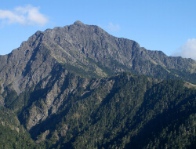
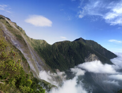

Mt.Jade
Main Peak
The main peak of Yushan Mountain is located in the center of Taiwan. It is the boundary mountain between Xinyi Township, Nantou County, Taoyuan District, Kaohsiung City, and Alishan Township, Chiayi County. It is 3,952 meters above sea level. The first peak, the rich natural scenery is even more eye-catching. Countless tourists have landed to challenge the limits of their physical abilities. It is also the best place to understand Taiwan's life and experience nature.
NO.001
3952m
ChiayiCounty
MORE

Mt.Syue
Located at the junction of Heping District, Taichung City and Taian Township, Miaoli The main peak of Snow Mountain is 3886m high, second only to the second peak of Yushan Mountain. Under the main peak and the northern edge, you can see the largest and most complete ice cirque terrain in Taiwan—the No. 1 Snow Mountain Circle Valley. ".
NO.002
3886m
MiaoliCounty
MORE
Mt.Siouguluan
Mount Siouguluan, with an elevation of 3829m, is located on Mabo Hengduan, one of the 275 high mountains in Taiwan. The mountain is located in the Yushan National Park area and is the highest peak in the Central Mountain Range.
NO.006
3829m
NantouCounty
MORE

Mt.Nanhu
The elevation is 3741m. On the first section of the north, it is one of the 275 high mountains in Taiwan. The mountain is located in the Taroko National Park area. Generally speaking, Nanhu Lake is the Dashan Lake, which is the most majestic and imperial mountain among the mountains in Taiwan.
NO.008
3741m
TaichungCity
MORE
Mt. Jade East Xiaonan
Located in Meishanli, Taoyuan District, Kaohsiung City, Taiwan, with an elevation of 3,711 meters, it is a high mountain in the Yushan Mountains and one of the famous peaks in Taiwan.
NO.009
3711m
KaohsiungCity
MORE
Mt.Chungyangjian
It is a high mountain in the northern part of Taiwan's Central Mountain Range, with an altitude of 3,698 meters. It is located between Pingpingli, Heping District, Taichung City and Fushi Village, Xiulin Township, Hualien County.
NO.010
3698m
TaichungCity
MORE
Mt.Guan
Guanshan is a famous high mountain on the main ridge of the southern section of the central mountain range in Taiwan. It is the highest peak in the southern central mountain range, with an elevation of 3,668 meters.
NO.012
39668m
KaohsiungCity
MORE
Mt.Shimen
Shimen Mountain is the easiest mountain to climb among the Hehuan peaks, with an altitude of 3,237 meters. Currently, there are plank roads and stone steps. It takes about 30 minutes to reach the summit from the trailhead.
NO.070
3237m
MiaoliCounty
MORE

Mt.Beidawu
Beidawu Mountain is one of the Five Sacred Mountains in Taiwan. It is located at the southernmost point of the main ridge of the Central Mountain. It is 3092 meters above sea level. It is a first-class triangular point. , nicknamed "Southern Taiwan Barrier", is currently a landmark of Pingtung County.
NO.090
3092m
PingtungCounty
MORE
Mt.Lu
Lushan is a high mountain in Taiwan's Yushan Mountains, with an elevation of 2,981 meters. It is also the only one among the famous peaks in Taiwan whose height is less than 3,000 meters.
NO.100
2981m
KaohsiungCity
MORE

Mt.Qilai North Peak
One of the 275 high mountains in Taiwan, the peak is located in the Taroko National Park area.The topography of the North Peak of the main mountain of Qilai is unique. Generally, the two to three-day itinerary must be the main peak and the North Peak.
NO.016
3607m
HualienCounty
MORE

Mt.Hehuan
It is a high mountain in the northern part of the main ridge of Taiwan's Central Mountain Range. The main ridge is located at the junction of Datong Village, Renai Township, Nantou County, Delugu Village, and Fushi Village, Xiulin Township, Hualien County.
NO.037
3417m
NantouCounty
MORE
Mt.Pingfeng
Located in the west of Fushi Village, Xiulin Township, Hualien County, Taiwan, on the southwest side of Taroko National Park, it belongs to the Central Mountain Range
NO.065
3250m
HualienCounty
MORE
Mt.Yangtou
Sheep's Head Mountain, named for its shape like a sheep's head, is a Baiyue in the second section of the Central Mountain Range.The total length of the trail is about 4.1 kilometers, and the altitude difference exceeds 1,000 meters
NO.096
3035m
HualienCounty
MORE